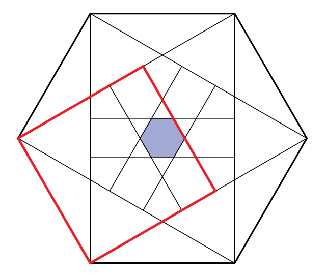

原六边形边心距 $h=\frac{\sqrt3}{2}$；向内正方形的对边距中心 $r=1-h$，六条这样的边围成一个同心正六边形，其外接圆半径 $\frac{2r}{\sqrt3}\lt \frac12$ 保证正方形另两条边不再切割。面积为 $2\sqrt3 r^2=\frac{7\sqrt3}{2}-6$，故 $(a,b,c,d)=(7,3,2,6)$，和为 $18$，答案 (C)。
For each edge of a regular hexagon with side length $1$, a square is constructed inside the hexagon with that edge as one of its sides. The region interior to all six squares is the interior of a smaller hexagon, shown shaded in the figure below. The area of the smaller hexagon can be expressed in the form $\frac{a\sqrt b}{c}-d$, where $a,b,c,d$ are positive integers, $a$ and $c$ are relatively prime, and $b$ is not divisible by the square of any prime. What is $a+b+c+d$? (A) $16$ (B) $17$ (C) $18$ (D) $19$ (E) $20$
中文翻译：边长为 $1$ 的正六边形，以每条边为一边向内作一个正方形。六个正方形的公共部分是一个较小的正六边形（图中阴影）。其面积可写成 $\frac{a\sqrt b}{c}-d$，其中 $a,b,c,d$ 为正整数，$a$ 与 $c$ 互素，$b$ 不含任何素数的平方因子。求 $a+b+c+d$。 (A) $16$ (B) $17$ (C) $18$ (D) $19$ (E) $20$
📌 答案依据：讲义《2026AMC10A 答案与解析》（用户随附，含答案总表与逐题解析）
讲义给出的正确选项为 (C) $18$，本站解析与之一致。
| 常见错误 | 错在哪 |
|---|---|
答 (B) 17 或 (D) 19 | 把小六边形的边心距误取为 $h-1$ 的绝对值后算错代数：$\left(1-\frac{\sqrt3}{2}\right)^2=\frac74-\sqrt3$，展开时把 $2\sqrt3\cdot\frac74$ 写成 $\frac{7\sqrt3}{4}$ 或把 $2\sqrt3\cdot\sqrt3=6$ 漏成 $3$，于是得到 $\frac{7\sqrt3}{4}-3$ 之类的错误表达式，和数偏 $1$。 |
答 (E) 20 | 直接把「大六边形面积减去六个正方形面积」或把小六边形边长当成 $r$ 而不是把 $r$ 当成边心距。正六边形面积用 $\frac12\times$ 周长 $\times$ 边心距，边心距 $r$ 对应边长 $\frac{2r}{\sqrt3}$，混淆两者会多出 $\sqrt3$ 因子。 |
答 (A) 16 | 忘了验证正方形另外两条边是否还会切掉区域，或误以为公共部分是十二边形；讲义特别强调「确定交集时，要验证全部边界条件」。漏掉这一步虽然本题数值恰好不变，但会养成跳步习惯，在改参数题中立刻出错。 |
根本问题：没有把「六个正方形的交集」转化成六条对称直线的半平面交。一旦认出这六条直线到中心距离相同且法向均匀分布，交集就是一个同心正六边形，面积只剩一次代数化简。
与官方解法同源：本站方案一与用户随附讲义《2026AMC10A 答案与解析》第 17 题的书面解答同源（本卷官方站尚未收录，讲义即本次权威答案依据）——原六边形边心距 $h=\frac{\sqrt3}{2}$，正方形与原边相对的边距中心 $r=1-h$，六条这样的边围成边心距为 $r$ 的同心正六边形；另两条边距中心均为 $\frac12$，而小六边形外接圆半径 $\frac{2r}{\sqrt3}\lt \frac12$，故不再切割；面积 $S=2\sqrt3\left(1-\frac{\sqrt3}{2}\right)^2=\frac{7\sqrt3}{2}-6$，$(a,b,c,d)=(7,3,2,6)$，和为 $18$。
本站的增量是补上「另两边不切割」的严格不等式证明、正 $n$ 边形一般化表、以及向内深度的等价参数。
第 1 步 · 原六边形的边心距。 边长 $1$ 的正六边形可分成 $6$ 个边长 $1$ 的正三角形，其高即边心距
$$h=\frac{\sqrt3}{2}.$$第 2 步 · 找到六个正方形的「内侧边」。 以某条边为一边向内作边长为 $1$ 的正方形，与该边相对的那条边平行于原边、向中心平移了 $1$。它到中心的距离为
$$r=1-h=1-\frac{\sqrt3}{2}>0 .$$由 $6$ 重旋转对称，六条内侧边的法向均匀分布、到中心距离同为 $r$，它们的半平面交就是一个与原六边形同心、同向的正六边形，边心距为 $r$。
第 3 步 · 验证另外两条边不再切割（讲义强调的边界条件）。 每个正方形的另两条边都垂直于原边并通过原边的端点，它们到中心的距离恰为原边边长的一半，即 $\frac12$。而边心距为 $r$ 的正六边形外接圆半径为
$$R=\frac{2r}{\sqrt3}=\frac{2}{\sqrt3}-1\approx0.1547 \lt \frac12 .$$因为 $R\lt \frac12$，小六边形全部落在这两条边所夹的带状区域内，六条内侧边已经完全决定了交集。
第 4 步 · 算面积并定系数。 边心距为 $r$ 的正六边形面积为
$$S=2\sqrt3\,r^2=2\sqrt3\left(\frac74-\sqrt3\right)=\frac{7\sqrt3}{2}-6 .$$故 $a=7,\ b=3,\ c=2,\ d=6$（$7$ 与 $2$ 互素，$3$ 无平方因子），$a+b+c+d=18$。
答案：(C) $18$。
取中心为原点，令一条边水平、其外法向沿 $+y$，则该边所在直线为 $y=h$，端点为 $\left(\pm\frac12,h\right)$。向内正方形给出三条约束：$y\le h-1=-r$（内侧边）、$-\frac12\le x\le\frac12$（另两条边）。绕原点旋转 $6$ 次取交集后，$x$ 方向的约束给出顶点横坐标上界 $\frac12$，而由第 3 步 $R=\frac{2r}{\sqrt3}\lt \frac12$ 可知起作用的仍是六条 $y\le -r$ 型直线。六条直线围成的正六边形边心距 $r$、边长 $\frac{2r}{\sqrt3}$，面积 $\frac12\cdot\frac{12r}{\sqrt3}\cdot r=2\sqrt3 r^2$，与方法一一致。
验证技巧：① 代数核对：$r^2=\left(1-\frac{\sqrt3}{2}\right)^2=\frac74-\sqrt3$，$2\sqrt3 r^2=\frac{7\sqrt3}{2}-6$ ✓；② 数值核对：$r\approx0.13397$，$S\approx0.06218$，与 $\frac{7\sqrt3}{2}-6\approx6.06218-6$ 一致 ✓；③ 边界核对：$\frac{2r}{\sqrt3}=\frac{2}{\sqrt3}-1\approx0.15470\lt \frac12$ ✓；④ 格式核对：$7$ 与 $2$ 互素，$3$ 无平方因子，四项和 $7+3+2+6=18$ ✓。
核心知识点：把「六个正方形的公共部分」看成六条等距、法向均匀分布的直线的半平面交 → 一个同心正六边形，边心距 $r=1-\frac{\sqrt3}{2}$。
必须掌握的要点：
把正六边形边长改为 $s=2$（向内正方形边长也为 $2$），求阴影小六边形的面积，写成 $\frac{a\sqrt b}{c}-d$ 并求 $a+b+c+d$。
边心距 $h=\frac{s\sqrt3}{2}=\sqrt3$，$r=s-h=2-\sqrt3$，面积 $2\sqrt3 r^2=2\sqrt3(7-4\sqrt3)=14\sqrt3-24=4\left(\frac{7\sqrt3}{2}-6\right)$，即原题面积的 $s^2=4$ 倍。此时 $c=1$（$14$ 与 $1$ 互素），$b=3$，$d=24$，和 $14+3+1+24=42$。
要点：面积随 $s^2$ 缩放；但 $a,c,d$ 会随通分方式改变，和数不是简单的 $4$ 倍——这是格式题的经典陷阱。
严格证明 $\frac{2r}{\sqrt3}\lt \frac12$，并说明若该不等式反向，交集形状会发生什么变化。
$\frac{2r}{\sqrt3}=\frac{2\left(1-\frac{\sqrt3}{2}\right)}{\sqrt3}=\frac{2}{\sqrt3}-1$。比较 $\frac{2}{\sqrt3}-1\lt \frac12\Longleftrightarrow \frac{4}{\sqrt3}\lt 3\Longleftrightarrow 16\lt 27$ ✓。若反向（例如正五边形或更小的 $n$），六条内侧边围成的多边形外接圆半径超过 $\frac12$，正方形的侧边会切入，交集不再是正六边形，面积公式失效。
要点：「交集 = 内侧边围成的正六边形」是有前提的；把前提单独证一遍，比事后回头改答案省事得多。
把正六边形换成边长为 $1$ 的正 $n$ 边形，向内作正方形。设边心距 $h_n=\frac{1}{2\tan(\pi/n)}$、$r_n=1-h_n$。列出 $n=3,\ldots,8$ 的 $h_n$、$r_n$ 与判别量 $\frac{r_n}{\cos(\pi/n)}$，指出哪些 $n$ 使「内侧边围成的正 $n$ 边形」就是真正交集。
判别量是内侧正 $n$ 边形的外接圆半径 $R_n=\frac{r_n}{\cos(\pi/n)}$，需 $R_n\le\frac12$ 才不被侧边切割。数值表：$n=3$：$h\approx0.2887,r\approx0.7113,R\approx1.4226$（否）；$n=4$：$h=0.5,r=0.5,R\approx0.7071$（否）；$n=5$：$h\approx0.6882,r\approx0.3118,R\approx0.3854$（是）；$n=6$：$h\approx0.8660,r\approx0.1340,R\approx0.1547$（是）；$n=7$：$h\approx1.0383>1$，$r\lt 0$；$n=8$：$h\approx1.2071>1$，$r\lt 0$。$n\ge7$ 时向内正方形已越过中心，公共部分为空。
要点：原题的 $n=6$ 处在「刚好成立」的窗口里；一般化一眼看出哪些几何直觉可以外推、哪些不能。
把向内正方形的「深度」从 $1$ 改为 $d>0$（内侧边距中心为 $|h-d|$）。求使阴影面积为零的 $d$，以及除 $d=1$ 外另一个与原题面积相同的 $d$。
内侧正六边形边心距为 $|h-d|$，面积 $2\sqrt3(h-d)^2$。为零当且仅当 $h=d=\frac{\sqrt3}{2}$（内侧边恰过中心）。原题 $d=1$ 给 $|h-1|=1-h=r$；要面积相同需 $|h-d|=r=1-h$，另一解为 $h-d=1-h$，即 $d=2h-1=\sqrt3-1\approx0.732$。此时内侧边在中心另一侧同样距离处，围出全等的小六边形。
要点：面积只依赖 $|h-d|$，故深度关于 $d=h$ 对称；这类「等价参数」是极值题的常见第二解。
是否存在某个边长 $s$，使阴影面积恰为原正六边形面积的 $\frac14$？说明理由。
原六边形面积 $A_0=2\sqrt3 h^2$（边心距 $h=\frac{s\sqrt3}{2}$），阴影面积 $A_1=2\sqrt3 r^2$（$r=s-h$）。比值 $\frac{A_1}{A_0}=\left(\frac{r}{h}\right)^2=\left(\frac{1}{\sqrt3/2}-1\right)^2=\left(\frac{2}{\sqrt3}-1\right)^2=\frac{(2-\sqrt3)^2}{3}=\frac{7-4\sqrt3}{3}\approx0.0239$，其中 $s$ 被约掉，故恒为定值，不可能等于 $\frac14$。
要点：先做量纲/缩放分析再解存在性；两个面积都按 $s^2$ 缩放，比值必然与 $s$ 无关，一眼就能判「不存在」。
口诀：「边心距先算清，内侧平移一减 h；六线同心成小六，二根三乘 r 方定」。